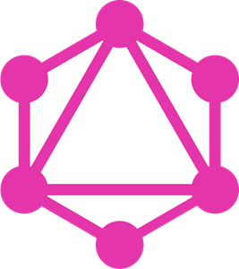
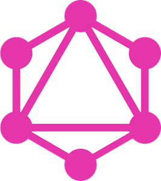

I am currently working as a Web Developer at Stage Front Tickets, a
ticket brokerage company. My team is working on a new platform with a
cutting edge stack (React,Redux,and .NET core). I have already had the
opportunity to take charge of large projects and suggest and implement
many new technologies at my time at Stage Front.
Previously I was working as a Software Developer at Sitetracker, a
project management company that manages projects for many different
clients, such as Verizon and Vodafone. I wasthe development lead in
over 10 of the companies we work with, and have learned how to
prioritize their different needs, meet deadlines, and communicate with
the people on the team to make sure that goals are reached
effectively.
New Music friends is a project dedicated to connecting people through
music. Chatrooms are created and playlists are formed, with each
member of the chat choosing a song to embody while they chat. New
music friends was built on MERN stack (Mongodb, Express, React,
Node.js), with socket.io to handle real time messaging.
Flower Lad was developed in unity for Game Development I at Stevens.
The game is about a small robot listening to poetry and planting
flowers. Flower Lad utilizes c# scripts to grow dynamic fields of
flowers which are able to interbreed and mutate. It was also used to
tell the player nice little poems.
The Poetry Bot was created using vanilla javascript and python. Using
Markov chains, the bot creates poetry from nearly 9 million lines of
poetry, courtesy of Project Gutenberg.
My name is George Beckert, I am currently working as a software
developer for a ticket brokerage named StageFront Tickets. I develop
full stack web apps, with a focus on the front-end. I am the most
comfortable with Node.js and React, but I am always pursuing new
technologies to become a more well rounded and current developer. When
I am not programming I love to play guitar and paint. I strive to
surround myself with art and music, and to absorb as much as I can
from the people and the world around me. I think of programming as a
blank canvas, and the more I learn from other people and other
disciplines, the more ideas I am able to implement.
 



 Download
Download